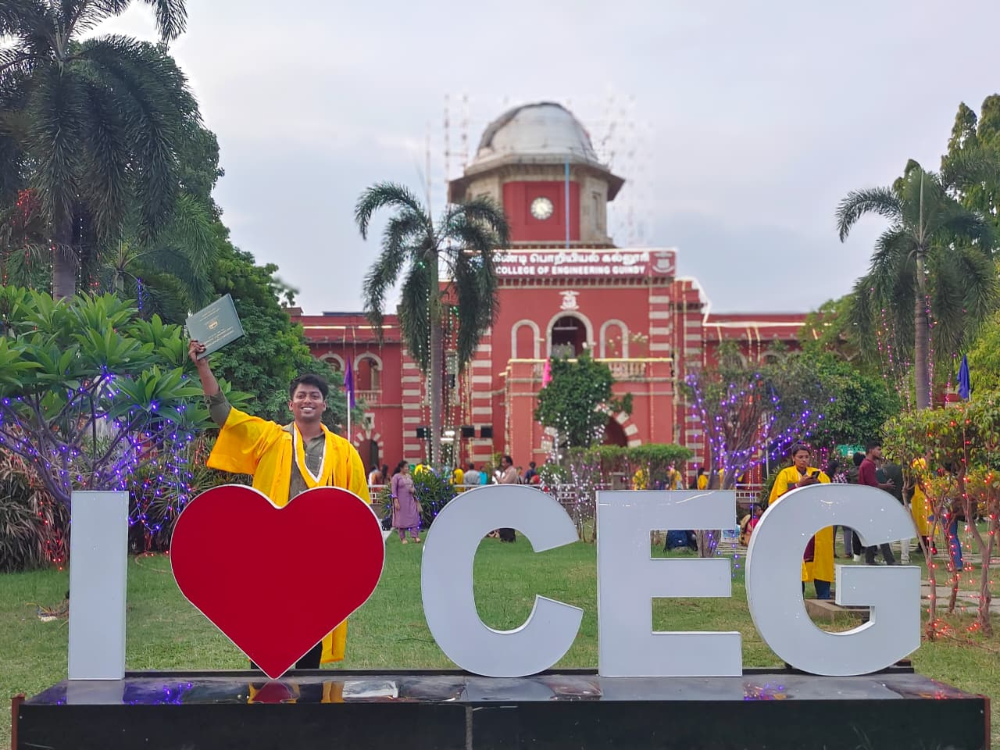
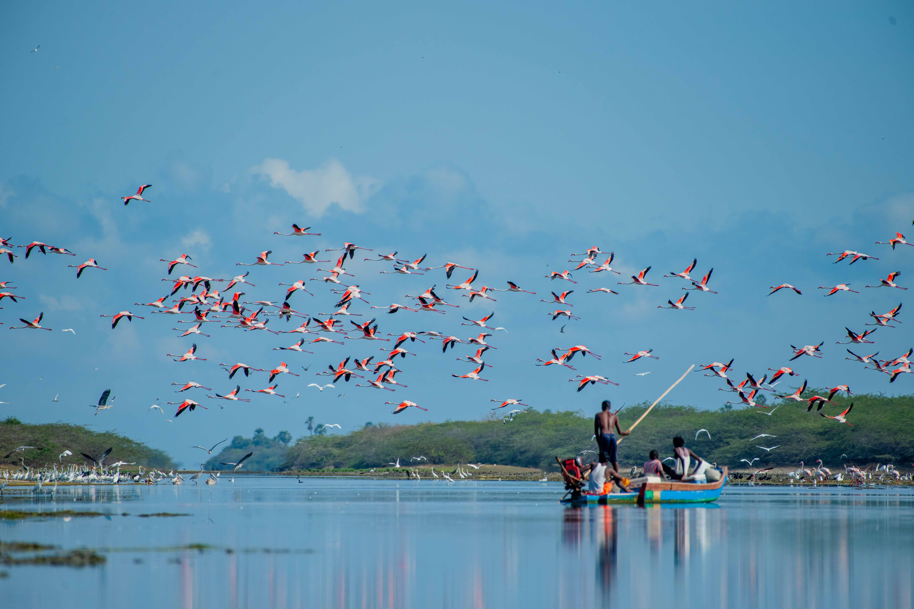
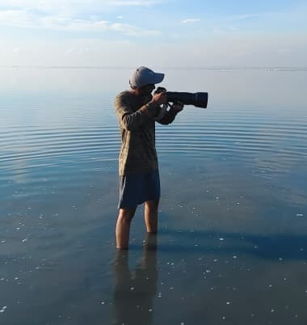
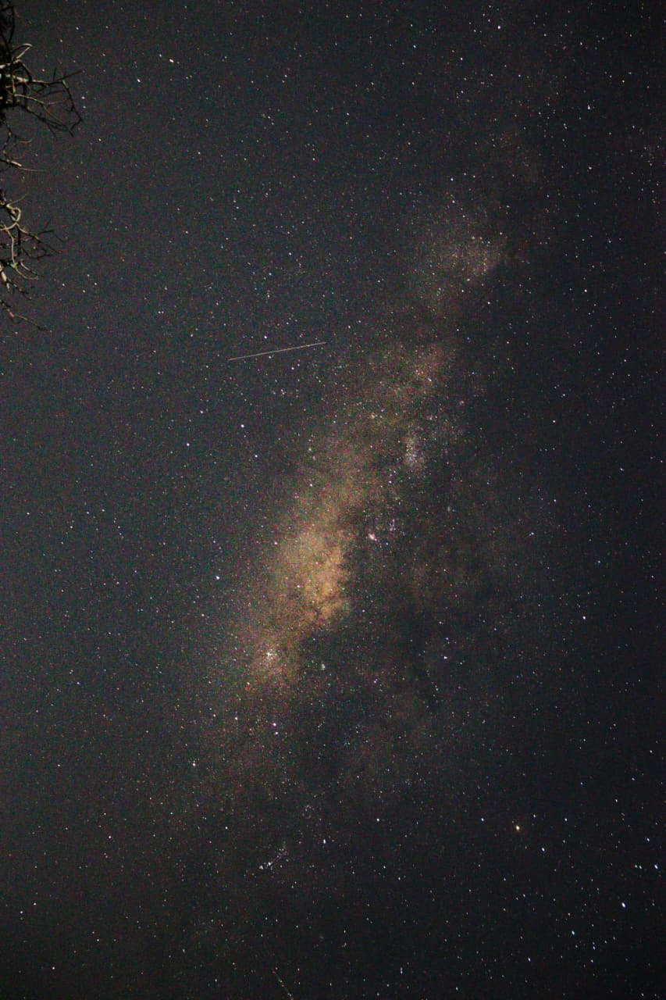
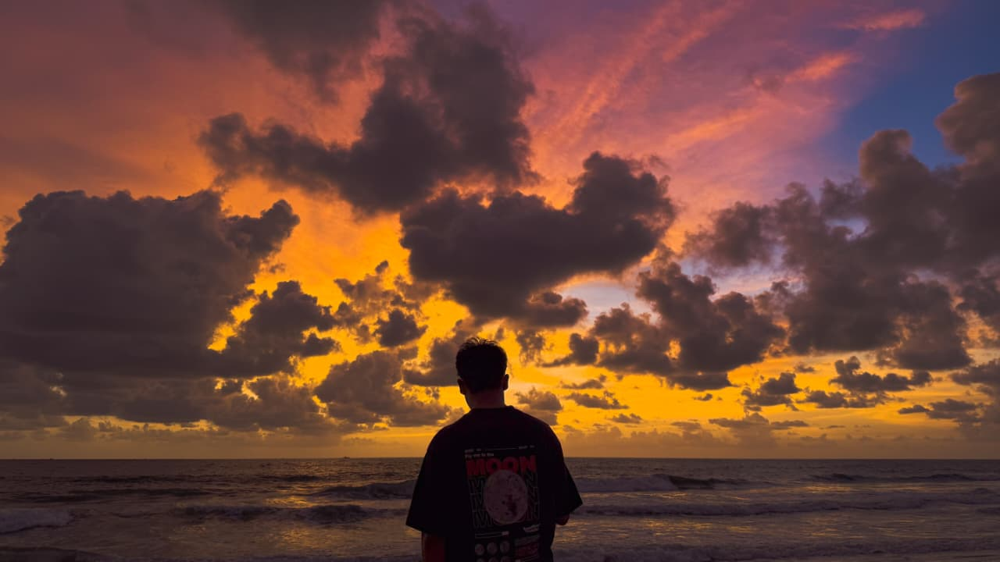
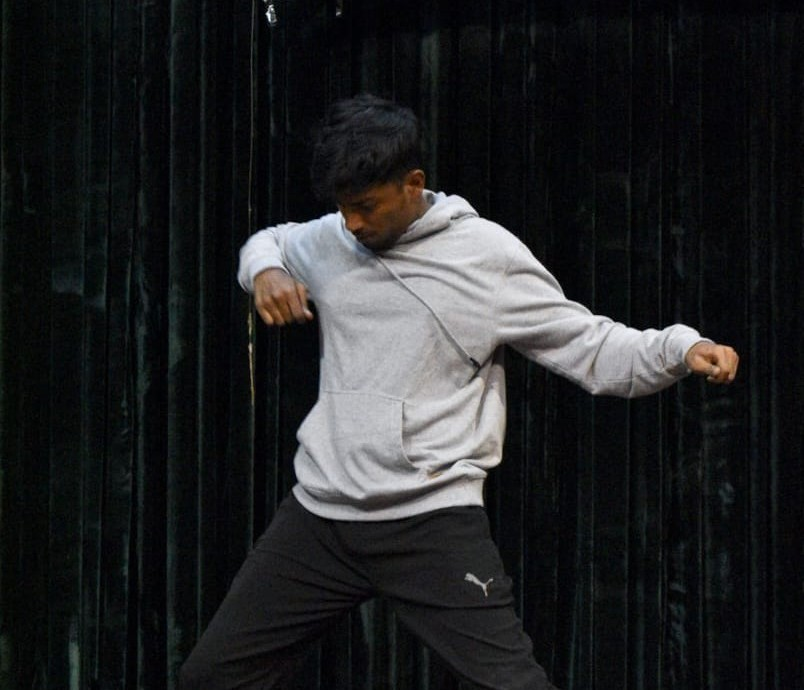

Life outside research and a visual journal of field work, wildlife, and travels.
A visual journal — field visits, wildlife photography, conferences, and life beyond the lab.

drop image → gallery-1.jpg
drop image → gallery-2.jpg
drop image → gallery-3.jpg'">
drop image → gallery-4.jpg'">
drop image → gallery-5.jpg'">
drop image → gallery-6.jpg'">